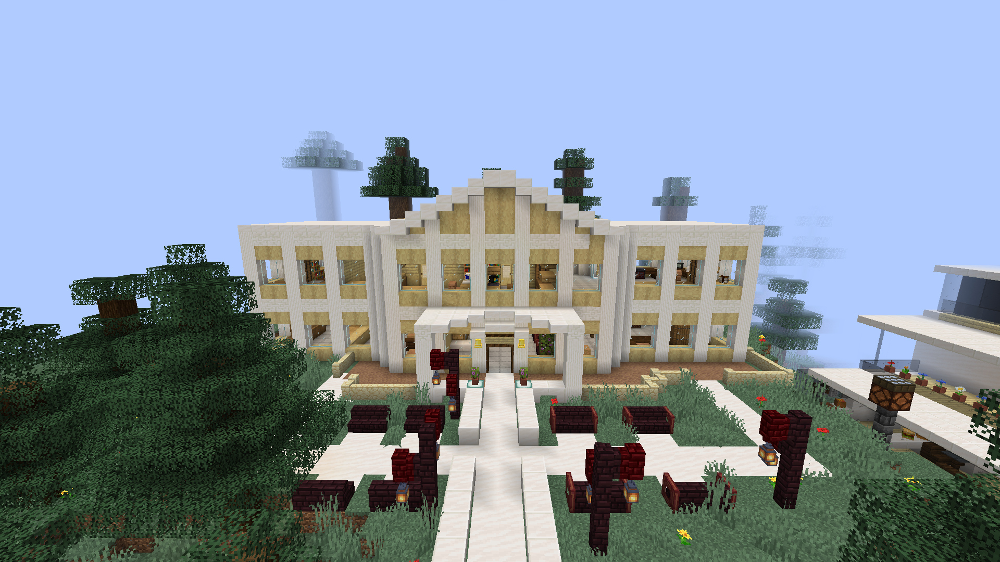

<!--
 Quara Theme by OllieJW (https://olliejw.me)
 License - https://olliejw.me/tos
-->

<!DOCTYPE html>
<head>
  <link rel="icon" href="./img/favicon.png">
  <title>EMC</title>
  <meta name="viewport" content="width=device-width, initial-scale=1, maximum-scale=1" />
  <meta name="title" content="MomentariyModder">
  <meta name="description" content="">
  <meta name="keywords" content="Minecraft, Mods">
  <meta name="theme-color" content="#4bb4f1">

  <!-- Edit this to change staff cards! -->


  <!--
    Notice:
    When you make changes to config,
    add ?v and a random number to config.css/js
    Example: <link rel="stylesheet" href="config.css?v=100">
  -->

  <script src="https://code.jquery.com/jquery-3.6.0.js"></script>
  <script src="https://cdn.jsdelivr.net/npm/handlebars@latest/dist/handlebars.js"></script>
  <script src="https://mcapi.us/scripts/minecraft.min.js"></script>
  <script src="js/main.js"></script>
  <script src="config.js"></script>

  <link rel="stylesheet" href="https://cdnjs.cloudflare.com/ajax/libs/font-awesome/6.2.1/css/all.min.css"/>
  <link rel="stylesheet" href="css/style.css">
  <link rel="stylesheet" href="config.css">
</head>

<body>

  <div id="target"></div>

  <script id="template" type="text/x-handlebars-template">

  <header>
    <div class="hero" id="hero">
      <a href="#!"><h1 style="padding-top: 3%;"></h1></a>
    <div class="feature2">
      <a href="index.html"></a>
      <a></a>
    </div>
    <div id="news">
      <div class="news-card">
      <strong><i class="fa-solid fa-scroll"></i>60 saylı məktəbin ən yaxşı maynkrafteri konkursu</strong>
      <a>Xoş gəlmisiz! Burada siz bizim konkursumuza qoşula bilərsiz. Əgər konkursumuza qoşulmaq istəyirsinizsə, bütün qaydalarla tanış olun və diskort serverimizə daxil olun.(Internede oyrenin Dislord nedi)</a>
      </div>
    </div>
    <p> </p>
    </div>
  </header>

  <section class="dark" id="projects">
    <div class="feature right">
      
      <p class="enlarge">
        <strong><i class="fa-solid fa-book"></i>Konkurs nədir?</strong>
        <b>•</b> Şəhərin ən az 1 rayonu qurulmalıdır. Öz dəsti-xəttinizi qoruyaraq müasir şəhər qurmalısınız.(Minimum 3-4 bina )<br>
        <b>•</b>Sizin artıq şəhəriniz varsa həmin şəhərlə konkursa qoşula bilərsiz. (Əgər sizin dünyanız Aternos kimi host saytlardadırsa, siz serveri qoşmalısız. Bunun üçün bizimlə əlaqə saxlamağınız rica olunur.<br>
        <b>•</b>Konkurs ?? tarixinə kimi aktivdir. (Yəni siz ?? tarixinə qədər öz şəhərlərinizi bizimlə bölüşə bilərsiniz.)
      </p>
    </div>
  </section>

  <section class="light" id="projects">
    <div class="feature left">
      
      <p class="enlarge">
        <strong><i class="fa-solid fa-receipt"></i>Qaydalar</strong>
        <b>•</b> Diskord hesabınız olmalıdır.<br>
        <b>•</b> İnternetdən bina tikmək qadağandır.<br>
        <b>•</b> “Mode” və “Plug-in” işlətmək qadağandır. (World Edit işlətməyə icazə var)
      </p>
    </div>
  </section>

  <section class="dark" id="projects">
    <div class="feature right">
      
      <p class="enlarge">
        <strong><i class="fa-solid fa-award"></i>Qalib iştirakçılar nə əldə edəcək? </strong>
        <b>•</b> Sertifikat “60 saylı məktəbin ən yaxşı maynkrafteri”
      </p>
    </div>
  </section>

  <section class="light">
    <h1><i class="fa-brands fa-discord"></i> Diskord</h1>
    <div class="buttons" id="social">
      <a href="https://discord.gg/k2JfTu5X" class="btn"><i class="fa-solid fa-hand-pointer"></i> Bas</a>
    </div>
  </section>


  <footer>
    <a>&copy; 2022 {{server_name}}.Bütün şəkillər müəllif hüquqları ilə qorunur.</br>{{server_name}} is not affiliated with Mojang Studios.</a>
    <a><b><i class="fa-solid fa-users"></i> Qurucular:</b> lolkekuli, Emincore, azyhantrop, MomentariyModder,Vilbucks</a>
  </footer>
  </script>

</body>
